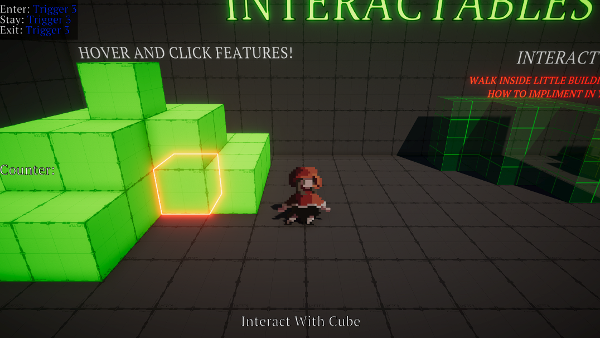
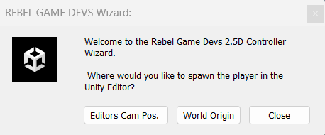

Documentation
2.5D Controller Learning Scene
The 2.5D Controller is a 3rd person 2.5D controller. This learning scene covers the 2.5D Controller as well as mouse pointer events. You can move around in the scene with WASD. You will find upon moving around that there are various different things incorporated.
2.5D Controller
Hide
This is the RGD_2p5DController. You will find that the controller comes equiped with a Cinemachine Camera. This camera will ignore everything besides the ignore camera layer. You can find some pretty cool results with adding this layer to objects.
The controller also comes with a Render Que Changer. This is used to render the sprite correctly when the sprite is inside a transparent object. The controller needs a RGD_2p5DController component. This will animate the sprite depending on the anim state machine. You can alter sprites by changing the anim controller in the animator component. Lastly, this controller is a varient to the prefab controller.
There are a few other additions added that are not inclduded in the resources folder version. The addition added is the RGD_MouseInteractor. This will allow you to interact with interactable type objects in the scene.
Adding To Your Own Scenes
Hide
You will find that it's really easy to add to your own scene.
1) Navigate to Toolbar menu --> RebelgameDevs/Core/Create A 2.5D Controller.
2) Go through the wizard to add the controller in your scene.
3) Once in the scene you are free to move the controller wherever you like and simply click play.